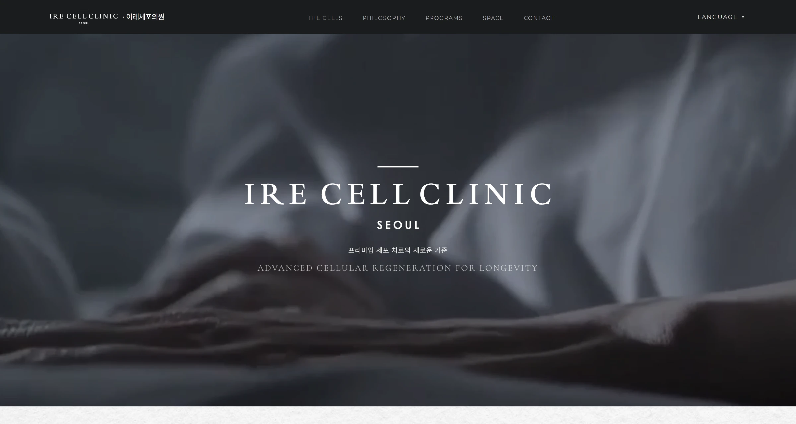
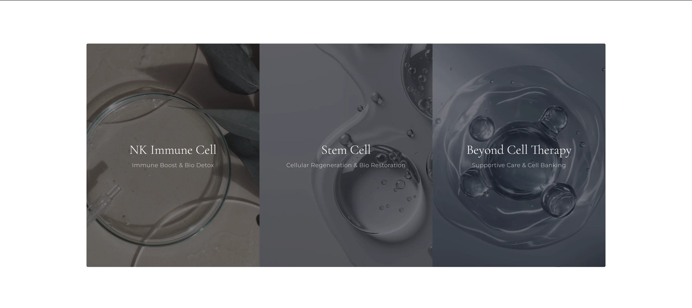
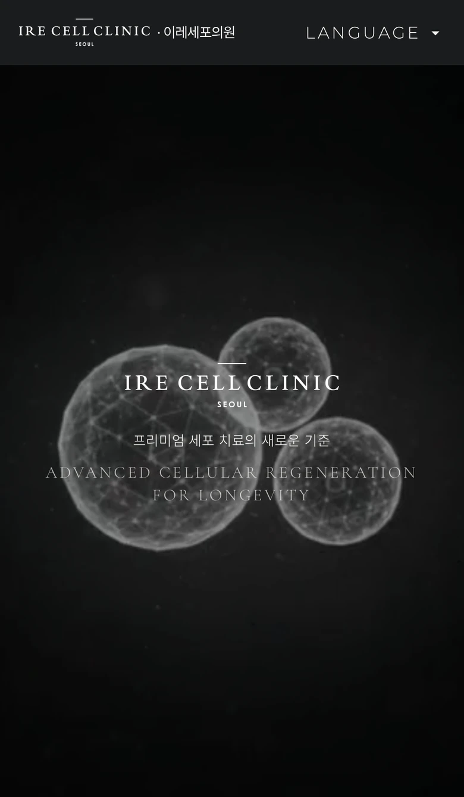
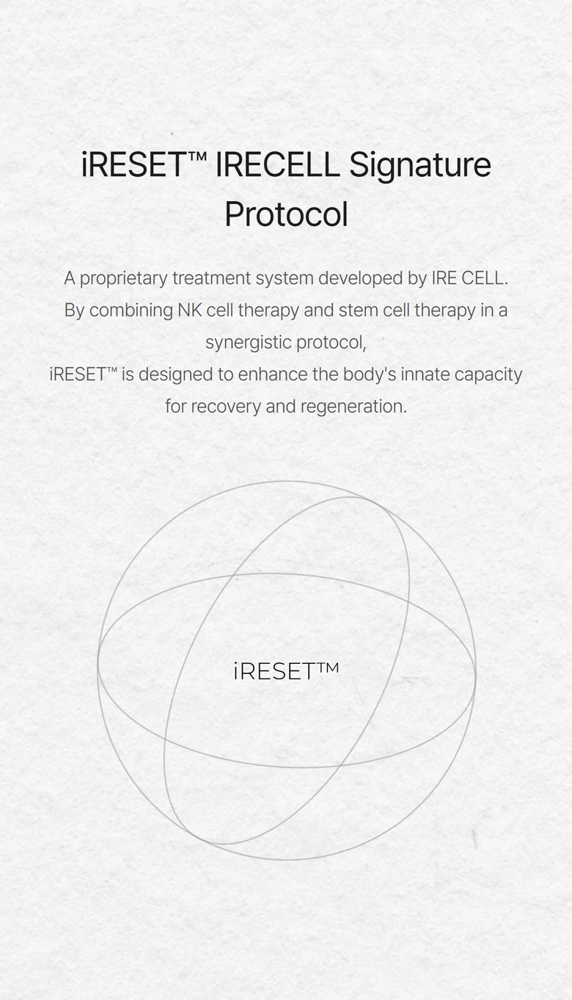
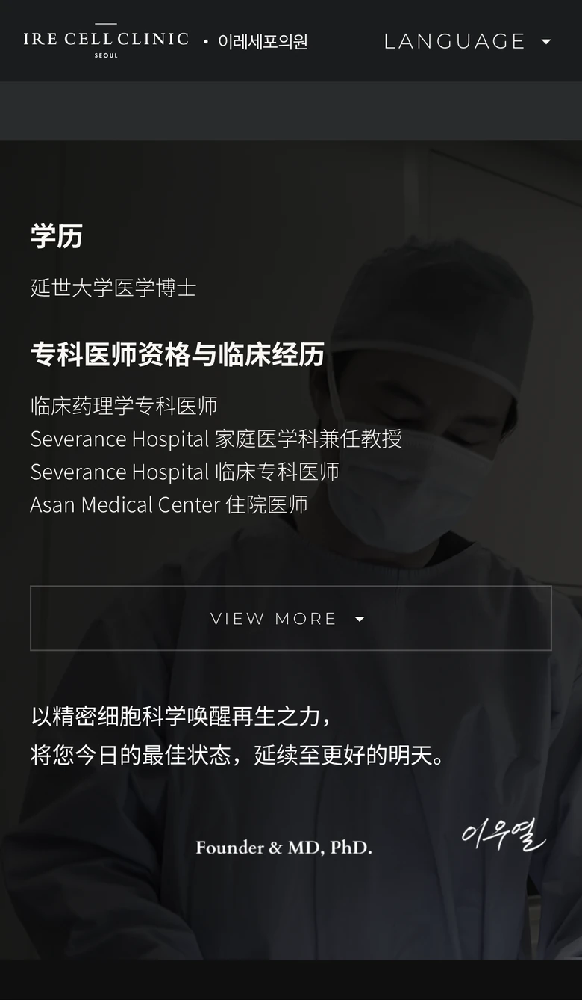

RESULT
큰 수정 없이 오픈하고,
연계 프로젝트로 이어졌습니다.
이 작업을 계기로 같은 클라이언트의 세포 배양 연구소 GENOVA LAB 홈페이지 디자인을 이어서 맡았습니다.
2026.06
새로 개원한 줄기세포 치료 병원 이레세포의원의, 국내외 환자를 위한 원페이지 홈페이지

이레세포의원은 새로 개원한 줄기세포 치료 병원으로, 홈페이지를 처음부터 만들어야 했습니다. 국내 환자와 해외 환자를 함께 고려한 사이트라 한국어 · 영어 · 중국어 페이지가 필요했습니다.
클라이언트는 프리미엄 이미지와 해외 줄기세포 병원 사례를 근거로 정보를 절제해 보여주길 원했습니다. 디자인부터 퍼블리싱까지 처음으로 전 과정을 맡은 프로젝트로, 레퍼런스를 찾아 제안하고 인터랙션과 디자인 방향은 기획 단계부터 함께 정했습니다.
병원이 보내준 레퍼런스는 주로 네이비 계열의 다크 톤이었습니다. 정보를 덜어낸 화면에서도 무게감 있는 첫인상을 주도록 어두운 바탕을 쓰고, 여백으로 정보의 양을 조절했습니다.
iRESET 프로토콜은 이레세포만의 시그니처 요법이라 히어로 바로 다음에 두었습니다. 이후 섹션도 줄기세포 병원을 처음 소개받는 순서로 이어지게 배치했습니다.
회전하는 원 그래픽과, 커서가 원 형태로 바뀌며 뒤 이미지의 색을 반전시키는 효과로 세포를 표현했습니다. PC에서는 세 개의 원이 함께 보이고 마우스를 올리면 움직이며, 모바일에서는 원이 자동으로 회전하고 안의 텍스트만 바뀌도록 해 작은 화면에서도 그래픽이 잘 보이게 했습니다.
관리와 검색 노출, 해외 사용자를 고려해 언어마다 별도 페이지로 구현하고 번역문의 줄바꿈을 직접 다듬었습니다. 연락 수단은 마케팅팀 의견을 클라이언트와 확인해 중국어는 위챗, 영어는 왓츠앱으로 나눴습니다.
어두운 바탕에 아이보리 글자를 기본으로, 영문은 세리프와 Montserrat로 병원의 인상을 만들었습니다.
“Live well. Live long. Live strong.”
Cormorant Garamond Light — 영문 카피iRESET™ · THE CELLS
Montserrat Light — 영문 라벨이레셀만의 독자적인 치료 시스템
Pretendard Light — 국문 · 본문실제 사이트의 전체 화면입니다. 화면 안에서 스크롤하면 처음부터 끝까지 볼 수 있습니다.

회전하는 원 그래픽과 원형 커서의 색상 반전 효과는 캡처로 담기지 않아, 실제 사이트에서 직접 확인할 수 있습니다.


하나의 디자인을 퍼블리싱한 뒤 언어별 페이지로 나누고, 클라이언트가 제공한 번역문을 적용했습니다.



정보가 적은 원페이지인 만큼 페이드인과 회전하는 원의 움직임을 더 정교하게 다듬고, 3D 인터랙션을 더해 한 페이지 안에서도 꽉 찬 경험을 만들고 싶었습니다.
언어별 페이지와 SEO, SSL까지 처음부터 끝까지 직접 진행한 사이트라 이후 작업의 기준이 되었습니다. 이 프로젝트 이후 AI를 섹션 단위가 아닌 프로젝트 전체 단위로 쓰고, 공통 영역의 CSS를 분리하는 방식으로 작업 방식을 바꿨습니다.
RESULT
이 작업을 계기로 같은 클라이언트의 세포 배양 연구소 GENOVA LAB 홈페이지 디자인을 이어서 맡았습니다.